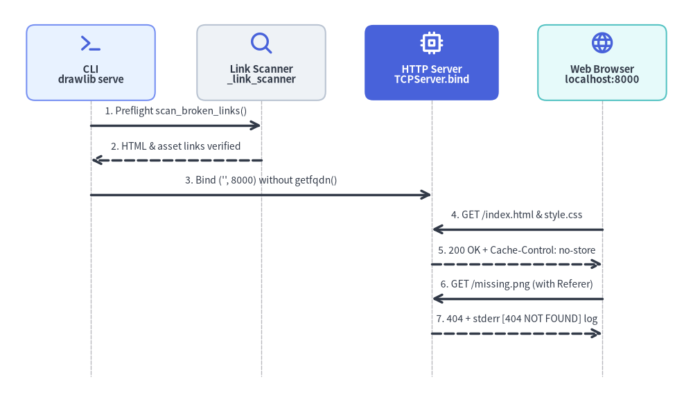
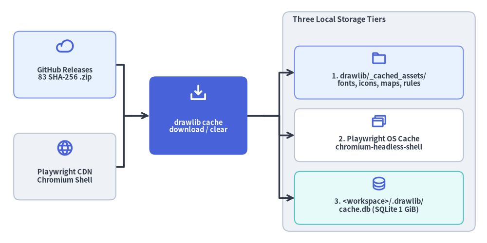

Local Preview Server & Three-Tier Cache Architecture
Fast visual iteration and deterministic offline builds are essential to "Illustrated Documentation as Code." Requiring Node.js dev servers to preview static HTML—or fetching unverified font binaries onto ad-hoc home directories during CI—introduces operational friction and network flakiness.
Drawlib pairs a zero-dependency standard-library HTTP preview server (src/drawlib/_http_server/) with a Three-Tier Local Cache & Asset Architecture (drawlib cache, _release_assets.py, _core/l3_external/_package.py, and _builder/_common/cache_manager.py).

Source Code
from drawlib.canvas import save, setup
from drawlib.diagrams.sequence import Participant, PhosphorIcon, SequenceDiagram
from drawlib.styles import Styles
setup(width=124, height=74)
d = SequenceDiagram(
node_style=Styles.PrimaryBold,
node_text_style=Styles.DarkBold.patch(text_size=10.5),
edge_style=Styles.DarkBold,
edge_text_style=Styles.Dark.patch(text_size=10.0),
node_card_style=Styles.Neutral.patch(shape_r=1.5),
autonumber=True,
col_width=30.5,
step_y=6.2,
margin=2.0,
)
cli = d.add(
Participant(
"CLI\ndrawlib serve",
width=23,
height=13.5,
icon=PhosphorIcon.TERMINAL,
icon_size=4.3,
card_style=Styles.PrimaryNeutral.patch(shape_r=1.5),
)
)
scanner = d.add(
Participant(
"Link Scanner\n_link_scanner",
width=23,
height=13.5,
icon=PhosphorIcon.MAGNIFYING_GLASS,
icon_size=4.3,
card_style=Styles.Neutral.patch(shape_r=1.5),
)
)
server = d.add(
Participant(
"HTTP Server\nTCPServer.bind",
width=24,
height=13.5,
icon=PhosphorIcon.CPU,
icon_size=4.3,
style=Styles.WhiteBold,
text_style=Styles.WhiteBold.patch(text_size=10.5),
card_style=Styles.PrimaryFlat.patch(shape_r=1.5),
)
)
browser = d.add(
Participant(
"Web Browser\nlocalhost:8000",
width=23,
height=13.5,
icon=PhosphorIcon.GLOBE,
icon_size=4.3,
card_style=Styles.SecondaryNeutral.patch(shape_r=1.5),
)
)
cli.request(scanner, "Preflight scan_broken_links()")
scanner.reply(cli, "HTML & asset links verified")
cli.request(server, "Bind ('', 8000) without getfqdn()")
browser.request(server, "GET /index.html & style.css")
server.reply(browser, "200 OK + Cache-Control: no-store")
browser.request(server, "GET /missing.png (with Referer)")
server.reply(browser, "404 + stderr [404 NOT FOUND] log")
d.draw(xy=(62.0, 37.0), align="center")
save()
1. Preview Server Internals (_http_server/_server.py)
serve_docs() delivers instant local previewing of compiled *_html/ directories (index.html, per-locale style.css, bundled fonts, SVGs, and PNG/WebP diagrams) using Python's http.server.ThreadingHTTPServer:
1.1. Startup Preflight & Browser Launch
- Directory Validation (
_resolve_serving_directory): Verifies the target path exists and is a directory (raisingValueError-> Exit1otherwise). - Automatic Preflight Link Scan (
_perform_link_check): Runsscan_broken_links()across all*.htmlfiles before binding the socket. In interactive serving mode, broken links print a[WARNING]report tostderrwhile allowing inspection; with--check,serve_docs()exits immediately (0if clean,1if broken) without opening a socket. Pass--skip-checkto bypass scanning during rapid rebuild loops. - Single-Port Binding Contract: Binds
("", port)(default8000) withallow_reuse_address = True. Drawlib does not silently hop to port8001if8000is occupied—instead, it printsError starting server on port <port>tostderrand exits with code1so port expectations in scripts and browser tabs remain deterministic (override explicitly via-p/--port). - Delayed Daemon Browser Opener: Unless
--no-browseris passed, spawns a background daemon thread that waits0.5sforserve_forever()to enter its accept loop before callingwebbrowser.open("http://localhost:<port>").
1.2. macOS getfqdn() Bypass & Zero-Cache Headers
_CustomHTTPServer.server_bind(): Python's standardHTTPServer.server_bind()invokessocket.getfqdn(), which triggers a reverse-DNS/mDNS lookup that frequently stalls for 5+ seconds on macOS laptops with VPNs or custom hostnames._CustomHTTPServercallssocketserver.TCPServer.server_bind(self)directly and setsself.server_name = str(host) if host else "localhost", making startup instantaneous._CustomHTTPRequestHandler: Inherits standard MIME-type resolution fromSimpleHTTPRequestHandler, injects aggressive cache-busting headers inend_headers()so rebuilt diagrams andstyle.cssedits appear on every browser refresh:
and overridesCache-Control: no-store, no-cache, must-revalidate, max-age=0 Pragma: no-cache Expires: 0send_error()to log[404 NOT FOUND] <path> (Referer: <url>)tostderrwhenever a page requests a missing asset.
2. Three-Tier Local Cache & Asset Storage Architecture
To keep the PyPI drawlib wheel compact while supporting offline rendering, incremental builds, and PDF/PPTX browser automation, Drawlib separates cached data across three distinct storage tiers (managed via drawlib cache list | download | clear):

Source Code
from drawlib.canvas import save, setup
from drawlib.diagrams.architecture import ArchitectureDiagram, Node, NodeGroup, PhosphorIcon
from drawlib.styles import Colors, Styles
setup(width=124, height=62)
d = ArchitectureDiagram(
node_style=Styles.PrimaryBold,
node_text_style=Styles.DarkBold.patch(text_size=10.5),
edge_style=Styles.DarkBold,
edge_text_style=Styles.Dark.patch(text_size=10.0),
node_card_style=Styles.Neutral.patch(shape_r=1.5),
)
gh_rel = d.add(
Node(
"GitHub Releases\n83 SHA-256 .zip",
width=26,
height=17,
icon=PhosphorIcon.CLOUD,
icon_size=4.5,
card_style=Styles.PrimaryNeutral.patch(shape_r=1.5),
),
xy=(13.5, 42.5),
)
pw_cdn = d.add(
Node(
"Playwright CDN\nChromium Shell",
width=26,
height=17,
icon=PhosphorIcon.GLOBE,
icon_size=4.5,
card_style=Styles.Neutral.patch(shape_r=1.5),
),
xy=(13.5, 16.5),
)
cache_cli = d.add(
Node(
"drawlib cache\ndownload / clear",
width=25,
height=20,
icon=PhosphorIcon.DOWNLOAD_SIMPLE,
icon_size=4.8,
style=Styles.WhiteBold,
text_style=Styles.WhiteBold.patch(text_size=10.5),
card_style=Styles.PrimaryFlat.patch(shape_r=1.6),
),
xy=(47.5, 29.5),
)
tiers = d.add(
NodeGroup(
"Three Local Storage Tiers",
width=49,
height=56,
style=Styles.Neutral.patch(shape_r=1.8),
text_style=Styles.DarkBold.patch(halign="left", text_size=11.0),
),
xy=(69.0, 0.0),
)
t1 = tiers.add(
Node(
"1. drawlib/_cached_assets/\nfonts, icons, maps, rules",
width=43,
height=13.5,
icon=PhosphorIcon.FOLDER,
icon_size=4.0,
card_style=Styles.PrimaryNeutral.patch(shape_r=1.4),
),
xy=(24.5, 40.5),
)
t2 = tiers.add(
Node(
"2. Playwright OS Cache\nchromium-headless-shell",
width=43,
height=13.5,
icon=PhosphorIcon.BROWSERS,
icon_size=4.0,
card_style=Styles.Neutral.patch(shape_fill_color=Colors.White, shape_r=1.4),
),
xy=(24.5, 24.5),
)
t3 = tiers.add(
Node(
"3. <workspace>/.drawlib/\ncache.db (SQLite 1 GiB)",
width=43,
height=13.5,
icon=PhosphorIcon.DATABASE,
icon_size=4.0,
card_style=Styles.SecondaryNeutral.patch(shape_r=1.4),
),
xy=(24.5, 8.5),
)
j_src = d.junction((30.5, 29.5))
gh_rel.connect(j_src, arrow="-")
pw_cdn.connect(j_src, arrow="-")
j_src.connect(cache_cli, arrow="->")
cache_cli.fork([t1, t2, t3], at_x=64.0)
d.draw(xy=(3.0, 3.0))
save()
2.1. Tier 1 — Package Asset Directory (<site-packages>/drawlib/_cached_assets/)
Defined by ASSETS_DIR_PATH in src/drawlib/_core/l1_core/_const.py, binary asset packages and compiled rule manuals live directly inside the installed drawlib Python package under drawlib/_cached_assets/{fonts,fonticons,icons,maps,rules}/:
- 83 Deterministic
.zipArchives (_release_assets.py): Every external package (ReleaseAssetPackage,category: "font" | "icon" | "map") is built viacreate_deterministic_zip_bytes()with flat filenames,0o644permissions (create_system=3),ZIP_DEFLATEDlevel9, and timestamps fixed to2026-01-01 00:00:00. - Cryptographic SHA-256 Verification (
_core/l3_external/_package.py): Whether fetched lazily on first draw or pre-warmed viadrawlib cache download [--fonts|--icons|--maps|--all], the archive's SHA-256 digest is verified againstReleaseAssetPackage.archive_sha256before extraction.drawlib cache clear --allwipesfonts/,fonticons/,icons/,maps/, andrules/.
2.2. Tier 2 — Workspace SQLite Render Cache (<workspace>/.drawlib/cache.db)
Managed by _builder/_common/cache.py, incremental diagram renders are stored per workspace in .drawlib/cache.db:
- Contains two tables—
image_cache(keyed by AST-normalized code, helper hashes, DPI, and format forbuild) andcli_image_cache(fordrawlib showexports)—bounded by an automatic 1 GiB LRU eviction budget. - Cleared selectively via
drawlib cache clear --images(and included indrawlib cache clear --all).
2.3. Tier 3 — Headless Chromium Cache (Playwright Browser Store)
PDF (build pdf) and PowerPoint (build pptx) compilation use Playwright's chromium-headless-shell stored in Playwright's OS browser directory (or PLAYWRIGHT_BROWSERS_PATH in Docker containers), coordinated across concurrent processes on POSIX via ~/.cache/drawlib/playwright_install.lock:
# Pre-warm all 83 font/icon/map ZIPs AND chromium-headless-shell for air-gapped CI
uv run drawlib cache download --all
# Or build the self-contained offline production container image
./dcli docker build --full
Next, explore how repository quality checks, asset syncing, testing, and releases are orchestrated in dcli Unified Orchestrator.